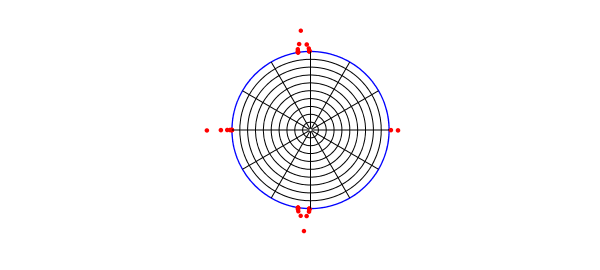
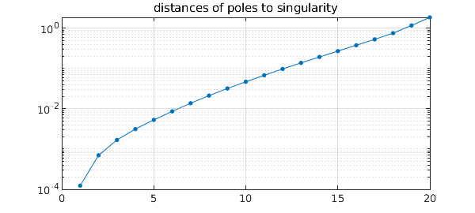

The problem of conformally mapping a simply connected domain $\Omega$ to the unit disk, with $f(z_c) = 0$ for a given point $z_c\in \Omega$, can be reduced to a Laplace problem on $\Omega$. If $u$ is a real harmonic function that satisfies $u(z) = -\log|z-z_c|$ on the boundary of $\Omega$, then the conformal map is $f(z) = (z-z_c)\exp (u(z) + i v(z))$, where $v$ is the harmonic conjugate of $u$. To solve this Laplace problem numerically, an easy method is to expand $u$ as a linear combination of a suitable family of harmonic functions -- real and imaginary parts of analytic functions -- and find expansion coefficients by least-squares fitting in a set of sample points on the boundary [2,3].
This process gives the "boundary correspondence function", the homeomorphism between the boundary of $\Omega$ and the unit circle. From here, one can then approximate both $f$ and its inverse by rational functions using AAA approximation as described in [1], invoking the the Chebfun aaa command. The resulting representations of $f$ and $f^{-1}$ can typically be evaluated in microseconds per point.
Here we apply this idea to a simple example of "Schwarz--Christoffel mapping without the Schwarz--Christoffel formula". The following commands determine the map of an L-shaped domain. We make use of an expansion basis consisting of two kinds of terms: powers $(z-z_0)^k$ for a point $z_0$ interior to $\Omega$, and fractional powers $z^{2k/3}$ to handle the singularity at the reentrant corner at $z=0$.
tic, N = 24;
format short, warning off % suppress Froissart message
Z = 1i*(1-tanh(12*linspace(1,0,5*N)')); % sample pts on bndry
Z = [Z(1:end-1); chebpts(2*N,[1i -1+1i])];
Z = [Z(1:end-1); chebpts(2*N,[-1+1i -1-1i])];
a = exp(.25i*pi); % 45 degree rotation
Z = a*[Z/a; conj(Z(end-1:-1:1)/a)];
mZ = a^3*Z/norm(Z,inf); % avoid branch cut
z0 = -.5-.5i; cZ = (Z-z0)/norm(Z-z0,inf);
k1 = (0:N); k2 = (1:N); % exponents for (z-z0)^k terms
m1 = k1*(2/3); m2 = k2*(2/3);
m1(3:3:end) = []; m2(3:3:end) = []; % exponents for z^(2k/3) terms
A = [real(cZ.^k1) imag(cZ.^k2) ... % least-squares matrix
real(mZ.^m2) imag(mZ.^m2)];
zc = -.2-.2i;
U = -log(abs(Z-zc)); % right-hand side
c = A\U; % solve the problem
boundary_err = norm(A*c-U,inf) % measure residual
V = [imag(cZ.^k1) -real(cZ.^k2) ... % conjugate harmonic fun
imag(mZ.^m2) -real(mZ.^m2)]*c;
W = (Z-zc).*exp(U+1i*V); W = W/W(1); % boundary correspondence
[f,pol] = aaa(W,Z,'tol',10*boundary_err); % conformal map
[finv,polinv] = aaa(Z,W,'tol',10*boundary_err); % inverse map
boundary_err = 5.1268e-07
Here is a plot of the map. The red dots show the poles of the AAA approximation, which represents $f$ to about six digits of accuracy. There are also a few more poles off-scale.
LW = 'linewidth'; MS = 'markersize'; plot(Z,'b',LW,1) axis(1.1*[-1 1 -1 1]), axis square, hold on, axis off plot(pol,'.r',MS,10) ray = chebpts(100); ray = ray(ray>=0); for th = 2*pi*(1:12)/12, plot(finv(exp(1i*th)*ray),'k',LW,.5), end circ = exp(2i*pi*(0:200)/200); for r = .1:.1:.9, plot(finv(r*circ),'k',LW,.5), end, hold off number_of_poles_of_f = length(pol)
number_of_poles_of_f =
27
The curves just plotted are the images under $f^{-1}$ of circles and radial lines in the unit disk, which we now plot. The red dots are the poles of $f^{-1}$.
plot(W,'b',LW,1) axis(1.4*[-1 1 -1 1]), axis square, hold on, axis off plot(polinv,'.r',MS,10) for th = 2*pi*(1:12)/12, plot(exp(1i*th)*ray,'k',LW,.5), end for r = .1:.1:.9, plot(r*circ,'k',LW,.5), end, hold off number_of_poles_of_finv = length(polinv)
number_of_poles_of_finv =
44

A well-known effect, going back to Newman and 1964 and Zolotarev in the 19th century, is that poles of rational approximations tend to cluster exponentially near singularities [6]. Let us examine this effect for the first plot above, where the poles cluster near the reentrant corner. Here are the distances of those poles from the singularity plotted on a log scale. The curving down at the left edge is a known phenomenon, whcih is modeled in equation (3.2) of [2] and explained in [6].
distances = sort(abs(pol(real(pol)>0 & imag(pol)>0)));
clf, semilogy(distances,'.-',MS,12,LW,.5), grid on
title('distances of poles to singularity')

The exponential clustering is striking. The see it quantitatively, we can look at the ratios of successive distances:
ratios = distances(2:end)./distances(1:end-1)
ratios =
5.6939
2.4054
1.8590
1.6896
1.6297
1.5929
1.5440
1.5045
1.4706
1.4493
1.4325
1.4156
1.4033
1.3970
1.3973
1.4018
1.4266
1.5493
1.5900
For much more about numerical conformal mapping of regions with corners, see [4] and also the code confmap available at [5].
total_time_for_this_example = toc
total_time_for_this_example =
1.3084
[1] A. Gopal and L. N. Trefethen, Representation of conformal maps by rational functions, Numer. Math. 142 (2019), 359-382.
[2] A. Gopal and L. N. Trefethen, Solving Laplace problems with corners singularities via rational functions, SIAM J. Numer. Anal. 57 (2019), 2074-2094.
[3] L. N. Trefethen, Conformal mapping in Chebfun, Chebfun example chebfun.org/examples/complex/ConformalMapping.html.
[4] L. N. Trefethen, Numerical conformal mapping with rational functions, Computational Methods and Function Theory, 20 (2020), 369-387.
[5] L. N. Trefethen, confmap.m code, people.maths.ox.ac.uk/trefethen/lightning.html.
[6] L. N. Trefethen, Y. Nakatsukasa, and J. A. C. Weideman, Exponential node clustering at singularities for rational approximation, quadrature, and PDEs, Numerische Mathematik, 147 (2021), 227-254.